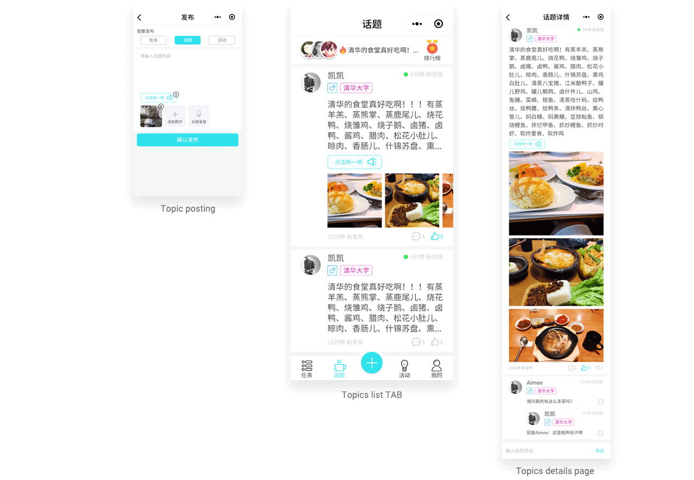

Background
Overview
I worked with THPK team as Design Lead to develop Wechat Mini-Program to support college life of Top 2 Universities in China.
The Product THPK Marketplace has launched for two years and is continuously getting 1000 DAU.
The Goal
THPK-Bang is the first product LiBa-Bang Technology Inc launched which provides peer-to-peer information services among the top 5 universities in China and owns over 40,000 users.
THPK-Bang is a Wechat Mini Program based, mobile end information service which is focusing on on-campus and off-campus information sharing,
including
problem sovling, second-hand selling and exchanging, dating and friends making, part-time job recruiting, topics sharing, activities and events
for students who are studying at THU and PKU, the most famous universities in China which both located in WU DAO KOU area in Beijing.
The Solution

My Works

Challenge
How to build a community which could benefit not only insiders but also people who are approaching?
Goal and Solution
1. Trustful information source around campus life
2. Real participants from top two univeristies in China
3. Simple, swift and stable interaction quality
Missions centric classified advertisement platform on wechat
Selected Function Showcase
Mission Related Features
The mission related features including browsing missions, posting missions, tracking missions. interacting and ending missions.
Mission Function Related Pages

Browsing, filtering and matching missions

Posting Missions

Interacting with other users and ending a mission
RESEARCH 1: Viability_Business
Business Model
Value Propostion
Business Goal and Target Users
An information exchange platform based on Wechat Mini Program and Wechat Public Platformfor college students in univeristy condensedarea.
The core value of the company is connecting college students in the same area and providing supports for their daily life.
Current Stage: Around Wechat Ecology

THPK-Bang was an Html 5 product embedded in THPK Bang Wechat Public platform. User could post mission in H5 page and our operation staffs would record valuable post's tracking ID and centerlized them in daily Wechat artical push. So other users could see high value posts and find them in H5 page by tracking ID.
We've had a certain volume of daily users on the WeChat Public Platform, and as Wechat Mini Program using scenario is extending, our team realized that it has high adhesiveness, convenience and integration with Wechat makes it more suitable for providing service and building a brand image. So creating a Mini-Program Product would be better than a Native Mobile Application which means relative higher cost.
RESEARCH 2: Feasibility_Technical
Why discard Html 5 product
and chose Wechat Mini Program?
1. Current simple function
There are only one function and three pages in H5 product now. So we need to extend more functions based on business requirement and user needs.
2. Annoying User Experience:
More functions means more complex user flow and information architecture which would bring more page jumping, more content and more data record. But page jumping on H5 is laborious, unstable and not very smooth, sometimes may even lose data records. And the browser would make the screen size smaller. The navigation is also less effective.
3. Same development workload but better performance
Based on Html framework, it isn't not more difficult to develop a mini program than H5 product. But Mini Program's interface could compare favourably with Native app and much better than H5.

RESEARCH 3: Desirability_User Needs
User Groups
Hosts and Responders

Hosts
Information Providers who post
Needs:
1. Requesting helps
2. Exchanging or selling second-hands objects
3. Sharing recruiting or volunteering opportunites
4. Making new friends or dating
5. Finding and sharing on-campus events and popular topics
6. Sharing resources
Responders
Information seekers who reply
Needs:
1. Finding an internship or par-time job
2. Willing to help when they have fit ability
3. Dating
4. Joining events
5. Having fun
6. Seeking resources
Feedback based on H5 product

I Like
I like the homepage is a missions list
I like the I could see the posted time.
I like there is a details page for each mission
I like the blue color which seems like simple and pure.
I Wish
I wish it could have a filter.
I wish I could tag my mission.
I wish see more pictures, now it seems like not very trustable.
I wish I could know the Price 0 means?
I wish I know the number before title means?
I wish the likes button could be clickable
I wish my wechat account could log in directly without need to leave my contact info.
RESEARCH Results
Design Requirement

Ideation
Redesign missions related features
Purpose:
Continue Wechat related business model

Currently, our operation and marketing team post daily popular missions list as an artrical every by choosing trusful and attractive missions from H5 platform. So our users and followers could find further information on H5 mobile web page by a tracking ID.
The core value of old H5 platform was missions which including posting, replying and browsing missions. So for a product update, I planed to redesign mission related features.
Persona
Meet our users

Host
Heidi is a senior EE student who are going to graduate this summer from Tsinghua University. Now she has already get a offer and start to work as a part time intern. So she is ready to relocated to her new apartment which is near Wangjing.
Scenario 1: Narrative
Heidi wants to sell her books and some electronic devices and appliances to trustful people on campus.

Responder
Ryan is a RA student who has already got an graguate student addmission at Peking University EE department. He just rent an apartment near Wudaokou area.
Scenario 2: Narrative
Ryan wants to buy some second hand item since he has spent too much money on housing.

User Needs
Methods
In context interviews and interceptions in Tsinghua University and Peking University
#1: Information Consistency and easy to find matched missions
Strategy:
Design four types missions that Hosts want to post and Responders seeked
Design different dimensions filters and shortcuts to help user match their interests
#2: Reduce disturb after a mission solved
Strategy:
Provide preset period of validity option when posting a mission
Provide ending mission function
Business Strategies
Methods
Interview operation and marketing experts internally
#1: Building a trustful university related community
Strategy: Show user's identification by a verification system
Encourage to add pictures when posting
#2: Lower learning cost and ease for using
Strategy:
Design new post categories based on posts in old H5 platform by classify and analyzed data and keywords in database.
#3: Strong adhesiveness
Strategy:
Encourage user interaction and reply in wechat mini-program.

UX Design
There are three crucial guidelines instructed me when I made the UX Design decisions.

1. Browsing, filtering and matching
Design: Missions List (Homepage)
Design Requirements:
Show user's identification
Show filters based on Host attributes, like gender, identidication
Show quick filters based on Missions attributes, like category and posted time
Make Missions list searchable

2. Posting
Post page
Design Requirements:
Make user categorize their needs
Encourage to add pictures when posting

3. Tracking my missions and receiving messages
My posts and my messages
Design Requirements:
Prioritize the Posts entrance for easily tracking mission feedbacks and progress
Mark new replies bold to make user check one by one
Make user could go back to their missions quickly

4. Seeing mission details replying messages
Mission details page
Design Requirements:
Only show thumbnails in three by three layout to make users browsing comments quicker
Make user could interactive no matter Host or other responders quickly

5. Mission tracking and ending
Mission's preset term of validity and end features
Design Requirements:
Provide preset term of validity or ending mission function for users

Final User flow and related pages


THPK Bang
Information Architecture

UI Design Guidelines

Goals:
1. Easy to publish information
2. Fast to receive response
3. Accessible to various information
Keywords:
Swift, Easy to Use, Simple and Clean, Responsive, Various, Stable.
Colors:
Based on the Research from NICK BABICH, above 50% people think that their favorite color is blue which is also globally thought the safest color in the world.
So I chose to use blue as the primary color in our product which means innovative, energetic and simple. Correspondingly, it could show the goal of our product. And in business design, most of the companies which emphasise technology and efficiency chose to use blue as their standard color.
UI Showcase
Homepage-Mission List-Detailed States

Mission Function Related Pages
Topics Function Related Pages

Events Function Related Pages

My and Setting Function Related Pages

Reflections and Future
Now we have launched our product on the WeChat platform and had more than 1000 users to use every day. And our next step is to optimize the main function like issue mission, topic and activity and at the same time to fix some bugs which are critical for the user experience.
Designed and coded by Faye Yifei Gong | All Rights Reserved | @fayegong.xyz© 2016-2019